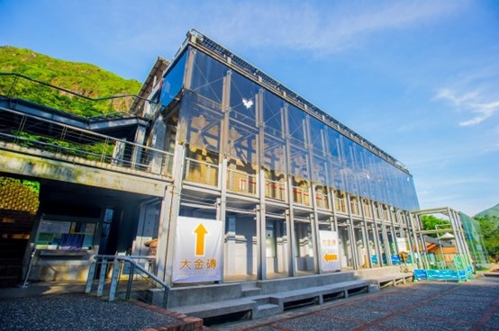

Taipei Zoo
-
Located:
No. 30, Sec. 2, Xinguang Rd., Wenshan Dist., Taipei City , Taiwan (R.O.C.)
-
Ticket price:
Full fare: $60
Student fare: $30
Group fare (discounted): 30% off
-
Opening hours:
9:00~17:00(16:00 Last admission)
Animal exhibition:9:00~16:30
-
Introduction:
Taipei Zoo was established in 1914 and was originally located in Yuan Shan, known as "Yuan Shan Zoo." Due to the limitation of space for expansion, it was moved to the Muzha District of Wenshan in 1986 and became the largest zoo in Taiwan, commonly known as "Muzha Zoo." The zoo integrates nature conservation, educational research, and entertainment, making it a popular destination for school outings and outdoor education. In addition to diverse animal habitats, the zoo offers regular penguin feeding shows, koala talks, and thematic activities related to animal care. It is a great place for both children and adults to learn about animals!
Gold Museum
-
Located:
No. 8, Jinguang Rd., Ruifang Dist., New Taipei City , Taiwan (R.O.C.)
-
Ticket price:
Full fare:$80
-
Citizens of New Taipei City
-
Seniors aged 65 and above (limited to citizens of the country)
-
Children under 12 years old
-
Students from all levels of schools in the country
-
People with disabilities and their accompanying companions.
-
Indigenous people aged 55 and above.
-
Holders of low-income household certification.
-
Volunteers holding the Honorary Card for Volunteer Service.
-
Members of the Chinese Association of Museums.
Free admission for those who hold the aforementioned proofs.
-
Opening hours:
Monday to Friday:9:30~17:00
Saturday and Sunday:9:30~18:00

-
Introduction:
Taipei Zoo was established in 1914 and was originally located in Yuan Shan, known as "Yuan Shan Zoo" at that time. However, due to space limitations, it was moved to the Muzha area in Wenshan District in 1986, becoming the largest zoo in Taiwan, commonly known as "Muzha Zoo." It combines nature conservation, educational research, and entertainment, making it a popular destination for school outings and outdoor education. In addition to diverse animal exhibits, the zoo offers regular penguin feeding shows, koala presentations, and themed storytelling sessions by animal keepers, providing a great opportunity for children and adults alike to learn about animals!
Xpark
-
Located:
No. 105, Chunde Rd., Zhongli Dist., Taoyuan City , Taiwan (R.O.C.)
-
Ticket price:
Full fare:$550
Student fare:$400
Children's ticket:$250
Charity ticket$250
-
Opening hours:
Sunday to Friday:10:00~18:00
Saturday:10:00~20:00
-
Introduction:
The Xpark located in Zhongli, Qingpu, is a Japanese-style urban aquarium created by the Yagishima Island team from Japan. It is easily accessible from the Taoyuan High-Speed Rail Station and the Airport MRT, making transportation very convenient. Tickets can be purchased online, and you can enter the park by scanning the QR code. With 4,500 square meters and 13 exhibition areas, it offers a completely new and immersive experience.
100tastes
-
Located:
Main branch: No. 183, Shengli Rd., East Dist., Hsinchu City , Taiwan (R.O.C.)
Sanmin Branch: No. 183, Sanmin Rd., East Dist., Hsinchu City , Taiwan (R.O.C.)
-
Opening hours:
Main branch:11:00~18:30 Closed on Mondays.
Sanmin Branch:12:00~18:30 Closed on Mondays.
-
P.S:
Main branch:Takeout only.
Sanmin Branch:Takeout & reservation for dine-in by appointment only.
-
Introduction:
We carefully select beautiful ingredients from all over Taiwan and awaken them with handmade craftsmanship and fresh enthusiasm. We put them in the oven, and the aroma fills the air. These simple yet steadfast efforts come together to create a delicious local culinary map.
Qingshui Geothermal Park
-
Located:
No. 150, Ln. 501, Sec. 8, Sanxing Rd., Datong Township, Yilan County , Taiwan (R.O.C.)
-
Opening hours:
9:00~17:00
-
Introduction:
In addition to boiling eggs and soaking your feet, the free admission Shuiyuan Hot Springs offers the opportunity to soak in warm baths. Similar to the Jhouzih Hot Springs in Taiping Mountain, both are sodium bicarbonate springs with the water displaying a beautiful blue color. You can enjoy the hot springs in a cypress wood pool while admiring the surrounding mountains and forests. It's also a lot of fun to DIY with bamboo baskets and cook your own main course like corn and eggs in the hot spring water.
-
Price List of Food Items for Sale :
Producers:
PUDS YU-FANG,CHOU CHIAO-YING,CHENG YI-CHIN,TSAI YU-HSUAN,HSIEH